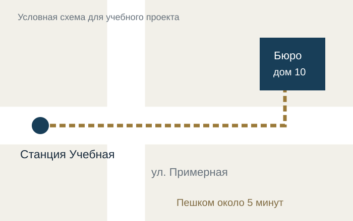

Как добраться
Контакты бюро
Адрес и связь
Условный адрес:
Москва, ул. Примерная, д. 10
Телефон:
+7 (000) 000-00-00
Электронная почта:
bureau@example.org
Часы работы:
Понедельник - пятница, 09:00-18:00.
Контакты приведены для оформления учебного сайта.

От станции "Учебная" пройти по ул. Примерной до дома 10, затем повернуть к входу в бюро. Путь показан пунктиром.
Учебный проект. Сотрудники, изображения людей, контакты и статистика вымышлены. Сайт не представляет действующее адвокатское бюро.